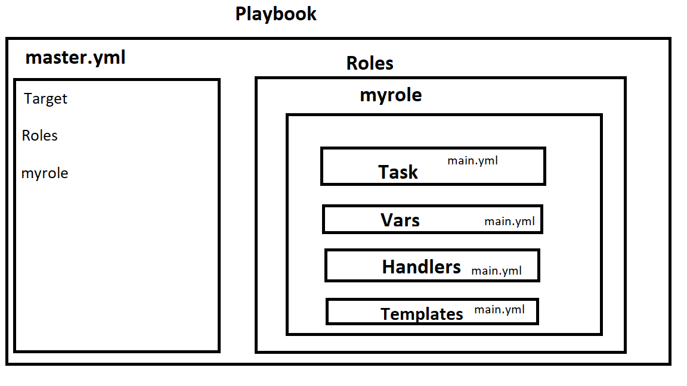

Roles
=> We can use two techniques for reusing set of tasks :- includes and roles.
=> Roles are good for organising tasks and encapsulating data needed to accomplish those task.
=> We can organise playbooks into directory structure called roles.
=> Adding more and more functionality to the playbooks will make it diffcult to maintain in a single file.
=> Roles contains directory for Default, files, Handlers, Meta, Templates, Tasks, Vars etc.
Explanation of the directories in a role :-
Default => It stores the data about role/application default variables. For eg. if you want to run to port 80 or 8080 then variables needs to define in this path.
Files => It contains files need to be transferred to the remote VM (static files)
Handlers => They are triggers or task. We can segregate all the handlers required in Playbook.
Meta => This directory contain files that establish roles dependencies eg-> Author Name, Supported platform, dependencies if any.
Tasks => It contains all the tasks that is normally in the playbook. Eg -> Installing packages and copies files etc.
Vars => Variables for the role can be specified in the directory and used in your configuration files. Both Vars and default stores variables.
Structure of the role:-

[ansible@ip-172-31-25-10 ~]$ tree
.
└── playbook
├── master.yml
└── roles
└── myrole
└── tasks
└── main.yml
4 directories, 2 files
[ansible@ip-172-31-25-10 ~]$ cat playbook/master.yml
---
- name: Work starts from here
hosts: server
become: yes
user: ansible
connection: ssh
roles:
- myrole
[ansible@ip-172-31-25-10 ~]$ cat playbook/roles/myrole/tasks/main.yml
- name: Install apache
yum: pkg=httpd state=latest